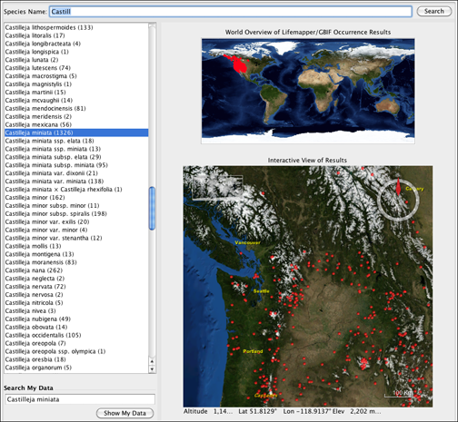

Lifemappper is a biodiversity geospatial data modeling, visualization and analysis platform consisting of multiple web services for systematics, biogeographical and macroecological research. Lifemapper has been integrated into Specify to allow users to view their own specify distribution data as well as compare their data to a GBIF/Lifemapper cache.
Click on the button on the Task Bar to launch Lifemapper.

Lifemapper Tool
Species Name searches the GBIF/Lifemapper cache and returns Species Names in the box below.
Enter at least the first three letters of a Species name in the Species Name text box and press the Return key or click the Search button. Matching Species Names in GBIF/Lifemapper will be displayed in the Species Name box. The number in parentheses next to the species name indicates the number of occurrence points, or collection objects, in GBIF.
Choose a name from the box. Lifemapper will add red markers on the maps representing the GBIG/Lifemapper occurrence points for the species. The World Overview map offers an overview of all the occurrence points in the world. The Interactive map zooms into a location that includes a high concentration of occurrence points.
Search My Data adds species occurrences in your Specify database to the Interactive map as green markers by clicking the Show My Data button.
Type a new species name into the Search My Data textbox to replace the Specify species occurrences on the Interactive map.
Using the Interactive Map
Turn the wheel on your mouse up to Zoom In.
Turn the wheel on your mouse down to Zoom Out.
Launching Lifemapper from within the Taxon Tree
Right-click on a Species node in the Taxon Tree to bring up a Context Menu and choose Lifemapper from the menu.
Lifemapper will open with the specimens from that species in your current collection placed on the map with a green marker.